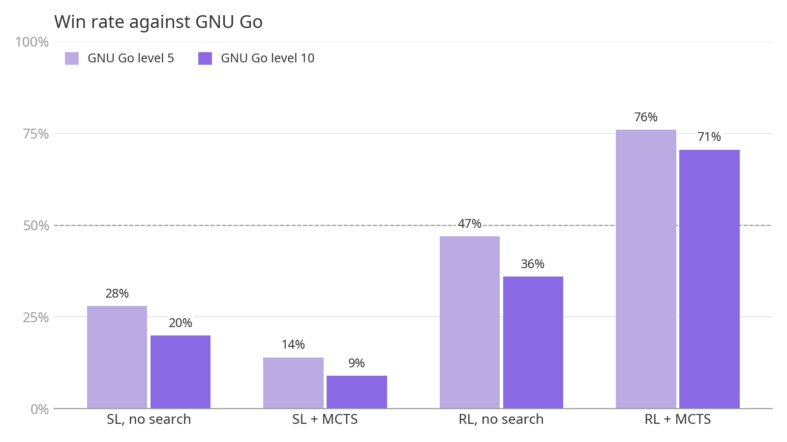
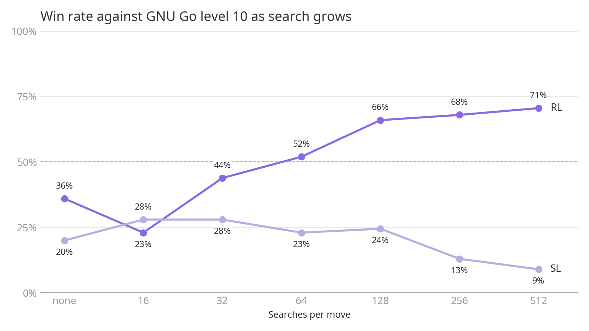
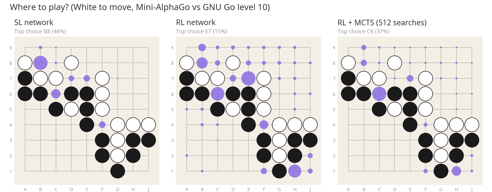
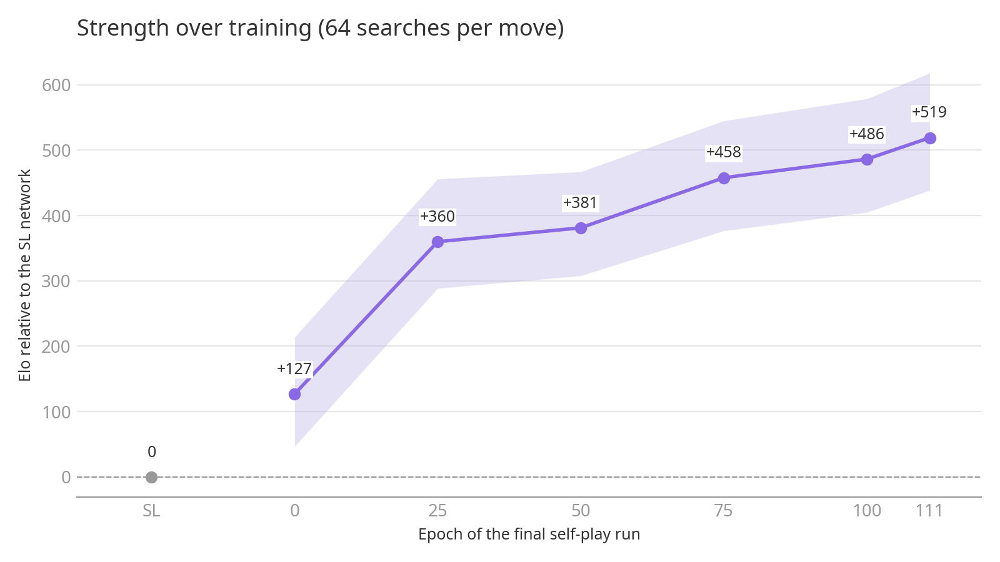

Mini-AlphaGo
AlphaGo from scratch for 9×9 Go
Michigan Data Science Team, University of Michigan
*Project leads

Overview
Mini-AlphaGo is a hybrid of AlphaGo and AlphaGo Zero written using only computational libraries. As in AlphaGo, a policy-and-value network first learns to imitate moves from online 9×9 games through supervised learning (SL). It then plays thousands of games against itself guided by Monte Carlo tree search (MCTS). Through self-play, Mini-AlphaGo develops a better policy from the search behavior and learns to predict the expected winner at intermediate game states. Everything except core math and ML libraries, including the Go engine, the tree search, the data pipeline, and a web interface for playing against the bot, was written from scratch.
Playing against GNU Go
We measured each major version of the bot against GNU Go 3.8, a long-standing open-source Go program, at levels 5 and 10. Every bar is about 100 games, with half played as each color, on a 9×9 board with komi 7.5 and Tromp-Taylor area scoring. The searching bots use 512 searches per move.

Search is not always helpful
MCTS reads ahead and scores each line with the value head. The supervised network was trained almost entirely on predicting moves with its policy, so its value head is close to untrained. Searching harder pushes Mini-AlphaGo to depend more on value estimates than policy estimates, so a poor value head is exposed by stronger search. Self-play trains the value head on the outcomes of Mini-AlphaGo's own games, so search allows both policy and value to contribute positively to performance.

The position below shows what this looks like for a single move.

Strength over training
To evaluate training progress, we saved the network every 25 epochs and played every checkpoint against every other with 40 games per pair at 64 searches per move. Elo ratings come from a Bradley-Terry fit to all 840 games.

Method
Supervised learning
The network starts by predicting the next move in online 9×9 games. This gives self-play a reasonable starting policy instead of random moves.
Self-play reinforcement learning
Starting from the supervised weights, the bot repeatedly plays itself and trains on the results:
- Search: Each move uses PUCT tree search guided by the network.
- Targets: The policy learns the search's visit counts and the value learns the final result of each game.
- Data: A replay buffer of the 2048 newest games is maintained with 256 new games added every epoch.
The final RL training ran on a cluster partition with 33 cores of an Intel Xeon Gold 6148, NVIDIA Tesla V100 16GB, and 64 GB of RAM for 24 hours.
Acknowledgements
This project would not have been possible without compute from MIDAS, U-M ARC High Performance Computing, and Google Cloud.
This project was completed in Winter 2025 but was revisited in Fall 2026 with Claude Opus 5.5 to improve training efficiency, re-run RL training with more compute, and evaluate the performance of trained models.